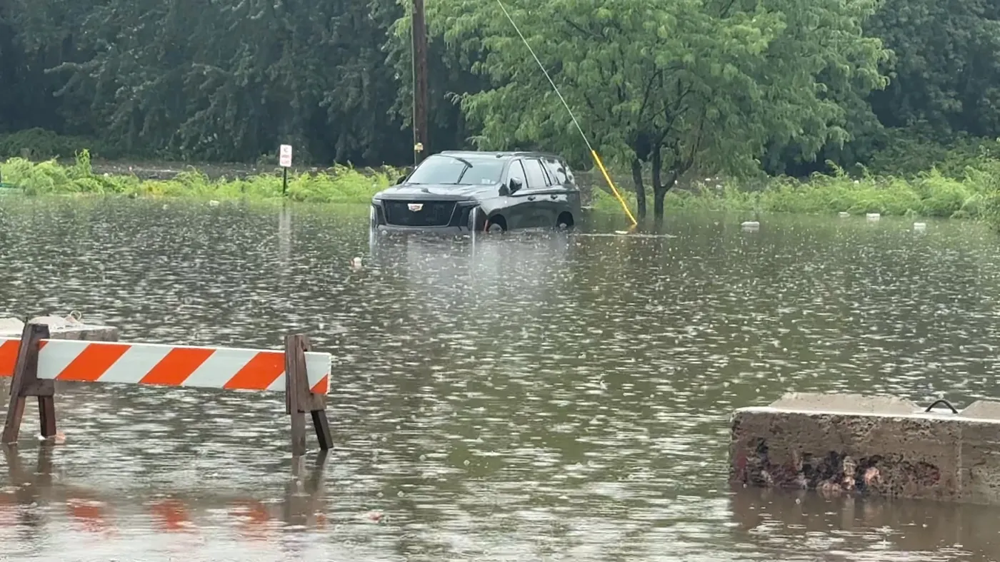
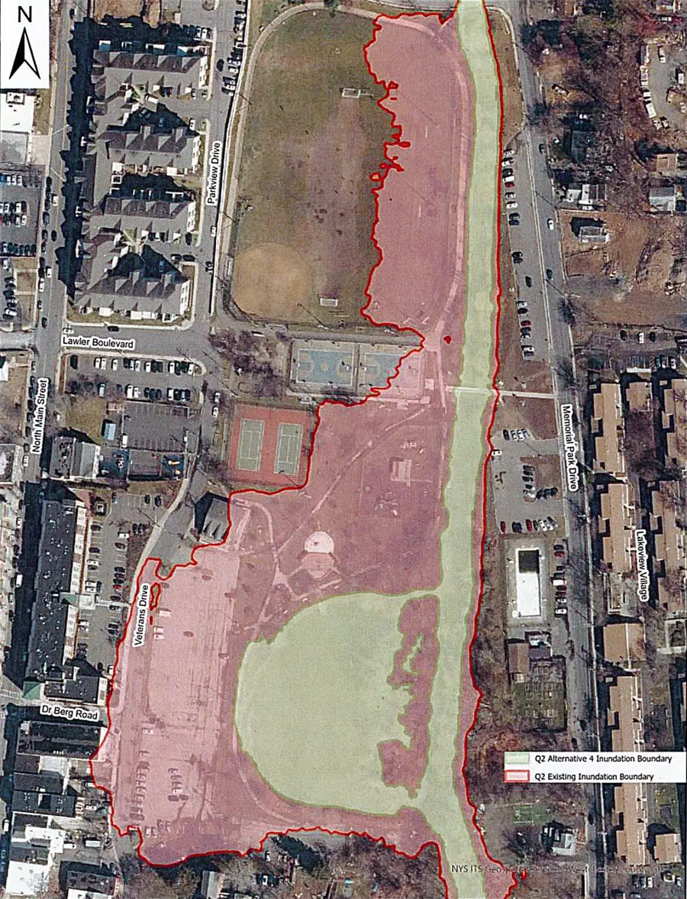

Case 04 · Memorial Park flooding
What would it take to get state funding for Memorial Park’s flooding?
Memorial Park, along Pascack Brook, flooded badly four times between 2020 and 2023. In spring 2026 the Village wanted to apply for a state grant to address it, but it was running a deficit, and the application seemed to require a new engineering study it couldn’t easily pay for. I spent the next few months working out what was causing the flooding, which fixes a grant would pay for, and whether that study was really needed.
Reading depth
Deep Dive also opens the source notes.
01 · Context
A known problem with several owners
Nobody disputed that the park floods. Rockland County’s 2024 hazard mitigation plan lists Memorial Park among the Village’s flood-prone areas and records major flooding there during Tropical Storm Isaias (August 2020), Hurricane Henri (August 2021), the remnants of Hurricane Ida (September 2021), and a severe storm in July 2023. Village-wide, the same plan counts 254 flood insurance claims and about $1.47 million paid, in a village where 24.2% of residents live below the poverty line.
What was unclear was who could act. The Village owns the park. The Rockland County Drainage Agency controls the waterway. The County holds the hazard plan and the earlier flood studies. The state Department of Environmental Conservation (DEC) decides what counts as a qualifying study for the grant. I expected the engineering to be the hard part. It turned out to be working out which of these institutions could answer which question, and getting the answers in writing.
Exhibit 01 · Memorial Park, 2026
The problem, on the ground


02 · Approach
Reading what had already been paid for
Before anyone spent money or assigned blame, I wanted to know what had already been studied, who controlled the affected stretch of the brook, and what commitments were on paper. I filed two Freedom of Information Law requests, one to the County and one to the Drainage Agency, for engineering records, consultant work, and the basis and status of a possible historical contribution from the Village.
The most useful document was a flood analysis Colliers Engineering & Design finished for the County in January 2025. Colliers built a computer model of about 370 acres around the brook and used it to test four ways of lowering the water in the park. They ran each one through two storms: a 2-year storm, which has about a 50% chance of happening in any given year, and a 100-year storm, which has a 1% chance. They also estimated what each fix would cost and checked that none of them would push more water downstream.
Why the park floods
The report changed what I thought the project was. Memorial Park sits on a wide, nearly flat stretch of Pascack Brook. Just downstream, the brook passes under Lawrence Street and then a Metro-North railroad bridge, which Colliers identified as too small for the flow. Two low weirs, small dams under two feet high, sit at the railroad bridge and 30 feet below it. Water backs up behind those structures and spreads across the park. The causes were outside the park, in structures the Village doesn’t control, and nobody had confirmed who owned the weirs or why they were built.
Exhibit 02
Four fixes Colliers modeled
| Fix | Water lower at the playground | Estimated cost |
|---|---|---|
| 1. Enlarge the railroad culvertFrom 22.5 × 6.4 ft to 60 × 8 ft, the largest that fits | 2-year0.1 ft100-year0.4 ft | $2.5M, including design and railroad coordination |
| 2. Remove the two weirsA concrete weir at the railroad bridge and a sheet-pile weir 30 ft below it | 2-year0.9 ft100-year1.3 ft | $100,000, if approvals allow |
| 3. Dredge 2–3 ft of sedimentFrom just above Lawrence Street to just below the railroad bridge | 2-year0.3 ft100-year0.3 ft | $100,000, plus testing and disposal |
| 4. Remove the weirs and dredgeOptions 2 and 3 together | 2-year3.0 ft100-year3.6 ft | $200,000, plus testing and disposal |
None of the four raised the 100-year flood level at South Pascack Road, about a mile downstream.
Two things in that table shaped everything after it. The most expensive fix did the least. And removing the weirs and clearing the channel together did far more than either did alone: about three feet lower in a 2-year storm, for an estimated $200,000.
Exhibit 03
A 2-year flood in the park, today and with fix 4

- Pascack BrookWater stays in the channel either way. The brook flows south toward Lawrence Street and the railroad bridge.
- Lawns and paths south of the courtsFlooded today; dry with fix 4.
- Parking off Veterans DriveFlooded today; dry with fix 4.
- South fieldStill floods with fix 4.
Today (modeled)With fix 4 (modeled)
A 100-year storm is a different story. Even with fix 4, the model still puts water across most of the park, only less of it. In the model, the fix makes the frequent floods much smaller but doesn’t keep the big ones out.
03 · Decisions
Weighing the four fixes
Colliers did the engineering. My job was to work out which of these fixes the Village could realistically pay for, get permission for, and build. I compared them on cost, on who would have to agree, and on which grant programs fund that kind of work.
Enlarging the culvert was out as a lead project: about $2.5 million for a few inches of water, with every step depending on the MTA. Dredging on its own did little, and one of the state’s green infrastructure grants specifically excludes dredging done because maintenance was put off. Removing the weirs was cheap and made a real difference. Fix 4 had the best result, but only if the channel work could be designed and described as stream restoration, with the sediment tested and disposed of properly.
So I recommended leading with weir removal, adding channel and bank restoration where the engineers could justify it, and keeping park improvements like lighting and fields out of this application.
Choosing the funding route
My first strategy memo, in early April, leaned toward state infrastructure financing for the brook work, with park and downtown improvements as a later phase. By May I had moved the lead to the state’s Resilient Watersheds Grant. It pays for the kinds of work on the table (weir and structure removal, stream channel restoration, floodplain reconnection, planting along the banks), covers up to 90% of eligible costs, and scores applicants partly on equity. The program counts 79% of Spring Valley’s population as living in disadvantaged communities. I kept a Department of State flood-resilience grant as a possible parallel application and set the green stormwater grants aside for a separate project, if the Village ever wanted one.
The catch was the study requirement. The grant funds projects backed by a Resilient NY study or a study DEC approves as comparable, and the Colliers report hadn’t been approved as either. But the state’s Resilient NY study of the Hackensack River watershed already covered Pascack Brook. I asked DEC whether that report could qualify the project, with the Colliers analysis as site-specific support.
The funding routes I compared
| Route | Best use | Main concern | My recommendation |
|---|---|---|---|
| Resilient Watersheds Grant (DEC) | Core brook and floodplain flood mitigation | Needs a Resilient NY or DEC-approved comparable study | Lead route |
| Department of State flood-resilience grant | Parallel funding in the same application round | Its own rules; can’t fund the same work twice | Select if available |
| Green Resiliency Grant | A separate stormwater storage project | Excludes maintenance dredging; needs storage sizing for a defined drainage area | Only for a separate package |
| Green Innovation Grant Program | Bioswales, porous pavement, tree trenches | Too narrow for a weir and channel problem | Secondary only |
Exhibit 04
From evidence to a fundable project
- Colliers’ model: the railroad crossing and two weirs hold water back in the parkThe fix is in the brook, downstream of the parkPresent it as stream and floodplain work
- Weir removal: 0.9–1.3 ft lower for about $100,000. Bigger culvert: 0.1–0.4 ft for about $2.5MThe cheapest fix does the most for the moneyLead with weir removal
- Grant rules: green infrastructure grants exclude maintenance dredging; the Resilient Watersheds Grant funds weir removal and stream restorationOne program fits the core workResilient Watersheds Grant as the lead route
- That grant needs a Resilient NY or DEC-approved study, and the Hackensack River study covers Pascack BrookA new study might not be neededAsk DEC to accept the Hackensack study
- County hazard plan: four major floods at the park, 2020–2023. Grant program: 79% of residents in disadvantaged communitiesA strong case on flood history and equityBuild the application around both
Narrowing the project to fit the grant
DEC came back with questions the Colliers report didn’t fully answer, including how the brook would behave under future, wetter conditions, and some of the fixes it modeled fell outside what the grant would fund. I wrote to DEC proposing a narrower project: removing a weir or related structures, with directly related stream restoration. DEC confirmed that the Hackensack River Resilient NY report could serve as the qualifying study for that scope, with the Colliers analysis as a supplement.
The June 5 deadline
For a couple of days, the team was working from a different assumption. On May 26, the understanding was that the Village needed a DEC-approved comparable flood study by June 5, including the hydraulic modeling and future-flow analysis the County’s report lacked. The engineers said that work could be done, but not by June 5. On May 27, Village staff agreed the date wasn’t realistic and asked leadership for direction.
The engineers and the grant consultant were each right, about different questions. The engineers were answering whether a new study could be finished in time. The consultant pointed out that the grant called for an existing report, and referred us to DEC’s list of completed Resilient NY studies. I circulated DEC’s written guidance and explained that a limited support memo could strengthen the application without a new study. The consultant then confirmed that June 5 wasn’t a required deadline for the pathway we had chosen.
What the engineers needed to answer
For the meeting with Colliers, I wrote out what the Village needed: answers to DEC’s four technical questions (how much water the brook can carry now and under future conditions, and how far it floods now and after the fix), plus a short memo, a map, a concept sketch, a rough cost estimate, and a schedule. I wasn’t asking for a new study. I wanted a memo that said plainly what the existing work supported, what it assumed, and where its limits were.
Getting permission to work on County land
Qualifying for the grant didn’t give the Village the right to build on land the County controls. This part needed care. The Village was asking for the County’s cooperation while it was still untangling financial obligations from earlier administrations, and the work touched County-controlled stream areas and rail infrastructure. I was careful not to make claims the documents didn’t yet support.
I pushed for written support from the Drainage Agency, and the team obtained a letter backing the application’s site control. The consultant noted that easements and long-term site-control terms could still be required.
Exhibit 05 · June 2026
Who has to say yes, and what each one needs
Phase 1 scopeRemove or modify the two weirs, with related stream channel, bank, and planting work
- NYS DECRuns the grant; issues stream permitsAccept a qualifying study; review permitsStudy accepted for this scope
- Rockland County Drainage AgencyControls the brook corridorSite control, access, possibly easementsSupport letter received
- Colliers Engineering & DesignBuilt the flood model for the CountyA short memo on eligibility, flood benefit, downstream effects, and future flowsRequested
- Whoever owns the weirsNot yet identifiedConfirm the owner and why the weirs were built before removing themOpen
- MTA / Metro-NorthThe railroad at the crossing; one weir sits at the bridge’s downstream faceCoordination if the work affects the crossingOpen
- U.S. Army Corps of EngineersFederal permits for work in the streamA permit, if requiredLater
- Village of Spring ValleyApplicant; owns the parkAbout 10% local match and a commitment to maintain the work for 30 yearsAt application
- Rockland CountyCommissioned the flood studiesRecords, through FOILReceived
04 · Outcome
Where it stands
The Village can apply for funding without paying for a new qualifying study, and it has the County support it needs at the application stage. That removed a costly obstacle for a village in deficit. It isn’t a grant award, nothing has been built, and there’s no reduction in flooding to report.
Several things still have to happen before anything is built. Someone has to confirm who owns the weirs and why they’re there, the engineers have to show that removing them won’t undermine the railroad crossing or cause problems downstream, and the permits and easements have to come through.
- DoneEligible to apply, no new study
- Not yetGrant awarded
- Not yetBuilt
- Not yetFlooding measurably reduced